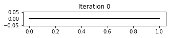
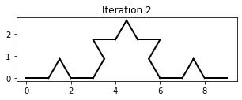
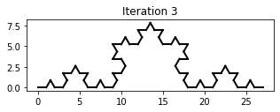
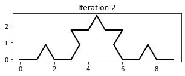
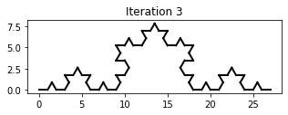

NSCI0007 Practice Exam 2¶
Exam Start: N/A
Exam End: N/A
Instructions¶
Enter your answers in the file
answers.ipynbin the practice exam folder.
Introduction¶
L-systems were invented by Biologist Aristid Lindenmayer, to model the growth of biological systems. The rules of an L-system are a set of instructions for transforming one string into another string. Here is an example of an L-system:
Axiom |
Rule 1 |
Rule 2 |
|---|---|---|
|
|
|
The axiom is a string representing the starting point for the system. The rules represent string replacements, where X->Y means replace all instances of symbol X with string Y, in this case resulting in a new string where each A has been replaced with B and B has been replaced with AB. Repeated application of the rules gives a sequence of strings.
Iteration |
String |
|---|---|
0 |
|
1 |
|
2 |
|
3 |
|
4 |
|
If we use symbols with special meanings, we can use the L-system to program a graphical turtle. Using the symbols "F" (draw forward 1 unit) "-" (turn left 60 degrees) and "+" (turn right 60 degrees), the following L-system implements a famous drawing called the Koch curve.
Axiom |
Rule 1 |
|---|---|
|
|
Iteration |
String |
|---|---|
0 |
|
1 |
|
2 |
|
The iterations 0, 1 and 2 and 3 of the Koch curve L-system are shown below:
   
 
Question 1 [3]¶
The code below implements a ‘Turtle Graphics’ program.
Write a function
rotate_right()which rotates the turtle an anglethetato the rightUse the functions
start,draw_forward,rotate_leftandrotate_rightto draw iteration 1 of the Koch curve.
import matplotlib.pyplot as plt
import numpy as np
def start(theta):
state[0] = 0
state[1] = 0
state[2] = 0
state[3] = theta
fig = plt.figure(figsize=(5,5))
ax = fig.add_subplot(111)
ax.set_aspect('equal', adjustable='box')
def draw_forward():
x = state[0]
y = state[1]
angle = state[2]
state[0] = x + np.cos(angle)
state[1] = y + np.sin(angle)
plt.plot([x, state[0]], [y, state[1]], color="black", linewidth=2)
def rotate_left():
theta = state[3]
state[2] = state[2] + theta * np.pi / 180
state = [0, 0, 0, 0]
# Example: draw an L
start(90)
draw_forward()
rotate_left()
draw_forward()
Question 2 [4]¶
Write a function
draw_sequence(sequence, angle)which draws a figure by following the instructions encoded in the stringsequence. The function should callstart, then read characters one at a time issuing the appropriate instruction to the turtle. Any characters other than"F","-"or"+"should be ignored.Test that the following code correctly produces iteration 1 of the Koch curve:
draw_sequence("F-F++F-F", 60)
Question 3 [2]¶
Write a function
apply_koch_rule(sequence)which returns the string generated by applying the Koch rewriting rule"F->F-F++F-F"to the stringsequence. Your function should replace every instance of the string"F"with the string"F-F++F-F". Every other character should remain unchanged.Test your function with the following code:
apply_koch_rule("XFAF")
XF-F++F-FAF-F++F-F
Question 4 [2]¶
Write a Python script which uses the functions apply_koch_rule and draw_sequence to draw iterations 0, 1 and 2 of the Koch curve. Your output should look like the illustration at the top of this page.
Question 5 [4]¶
The Hilbert curve is generated by following L-system:
Axiom |
Rule 1 |
Rule 2 |
|---|---|---|
|
|
|
"F" instructs the Turtle to draw forward, "-" to turn left by 90 degrees and "+" to turn right by 90 degrees. "X" and "Y" are ignored by the Turtle.
Write a function
apply_hilbert_rules(sequence)which returns the string formed by applying the Hilbert rewriting rule to the stringsequence. NB make sure you apply the two rules to the string simultaneously.Test your function with the code below:
apply_hilbert_rules("XY")
-YF+XFX+FY-+XF-YFY-FX+
Draw iterations 1, 2 and 3 of the Hilbert curve.
Question 6 [7]¶
Write a function
apply_rules(sequence, rule_list)whererule_listis a list of strings of the form"X->Y". The function should return the string generated by applying each of the rewriting rules inrule_listto the stringsequence.Test your function with the code below:
s1 = apply_rules("AB", ["A->AB", "B->BA"])
s2 = apply_rules("AB", ["A->XY", "B->XZ"])
print(s1, s2)
ABBA XYXZ
Question 7 [8]¶
The file lsysdata.txt contains the definitions of five L-systems. The file is a comma separated values file where each row (apart from the header row) contains the specification for an L-system. The first four items are the name, number of iterations, angle and axiom; the remaining items are the rewriting rules.
Write Python code to read the data from the file and plot each of the L-systems.
For each system, plot the
nth iteration of the L-system wherenis the number of iterations specified in the file.Add the name of the system as a title to each plot.
Hint: write a function draw_l_system(axiom, theta, rule_list, n) which draws iteration n of the specified L-system.